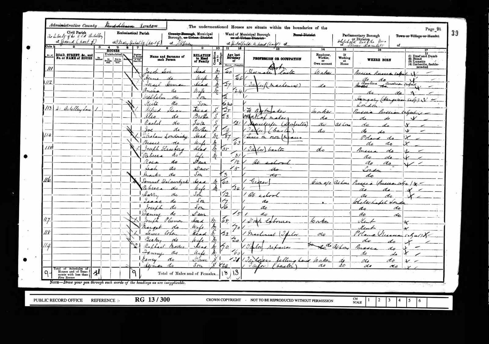
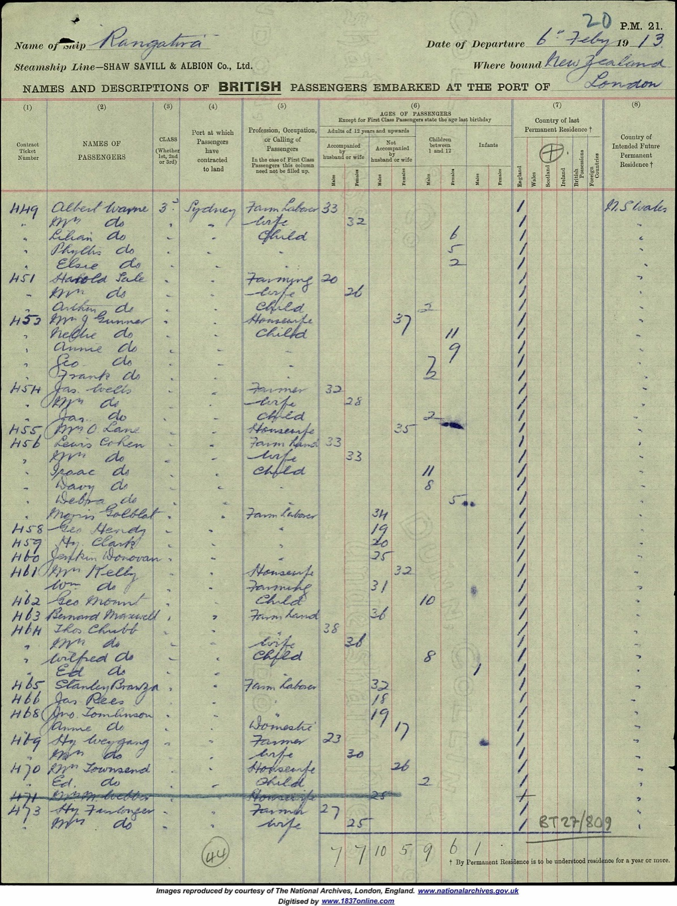
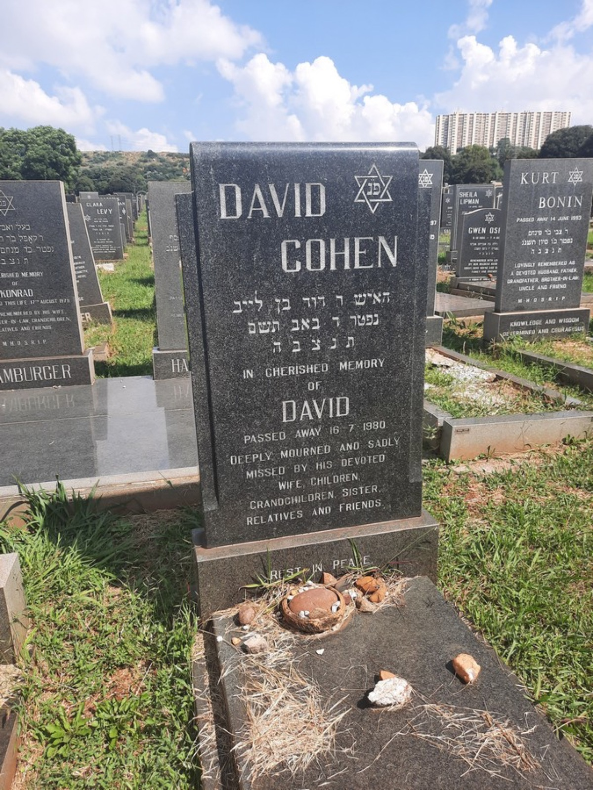
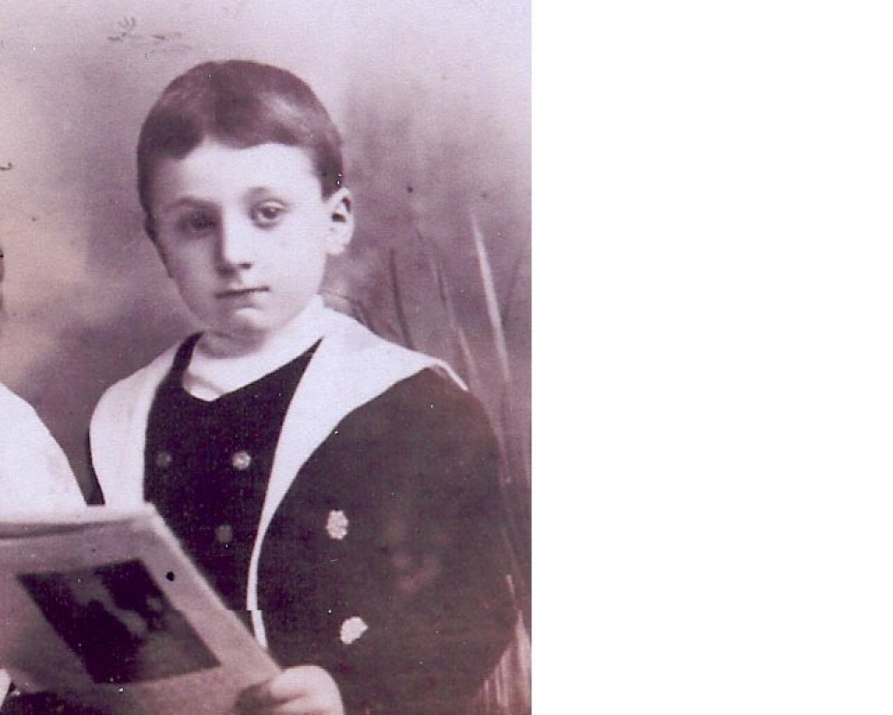
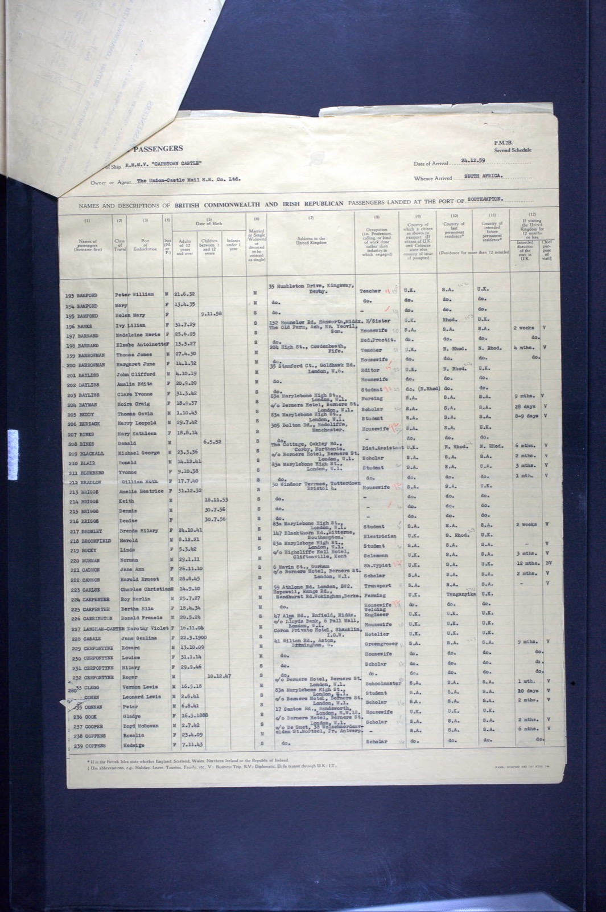
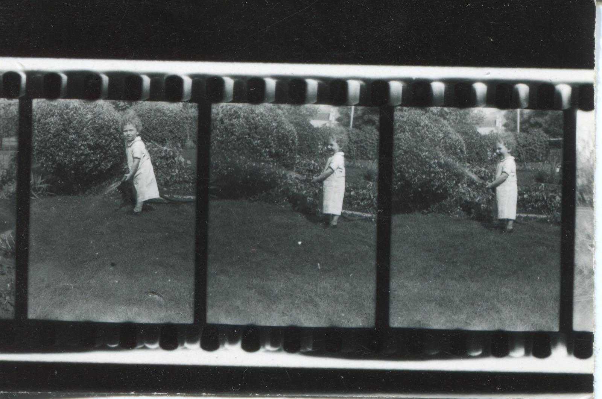
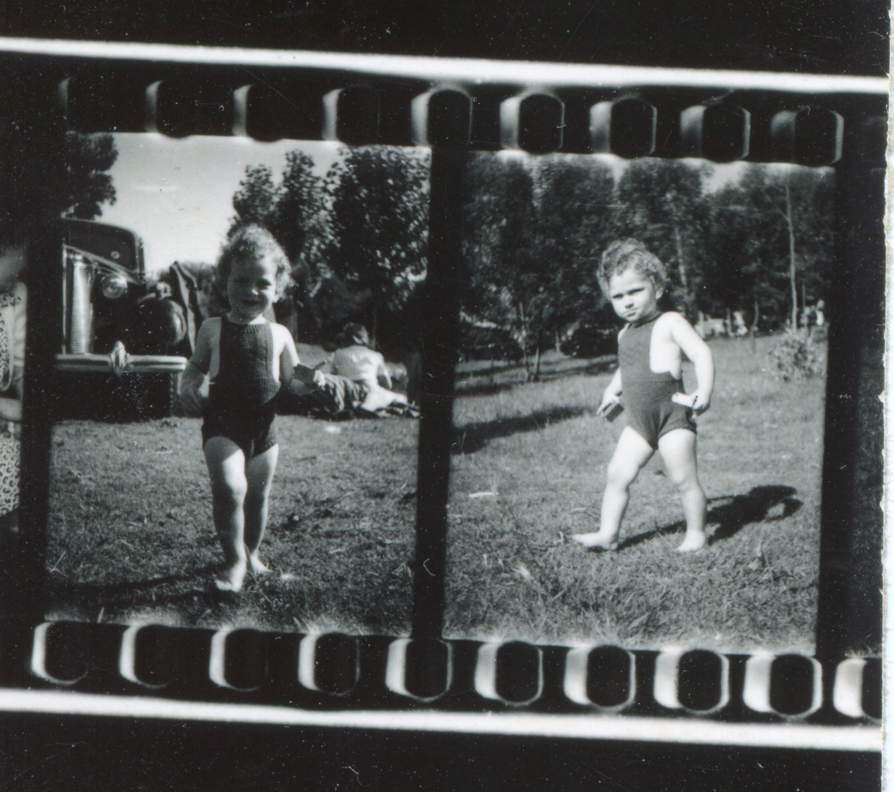
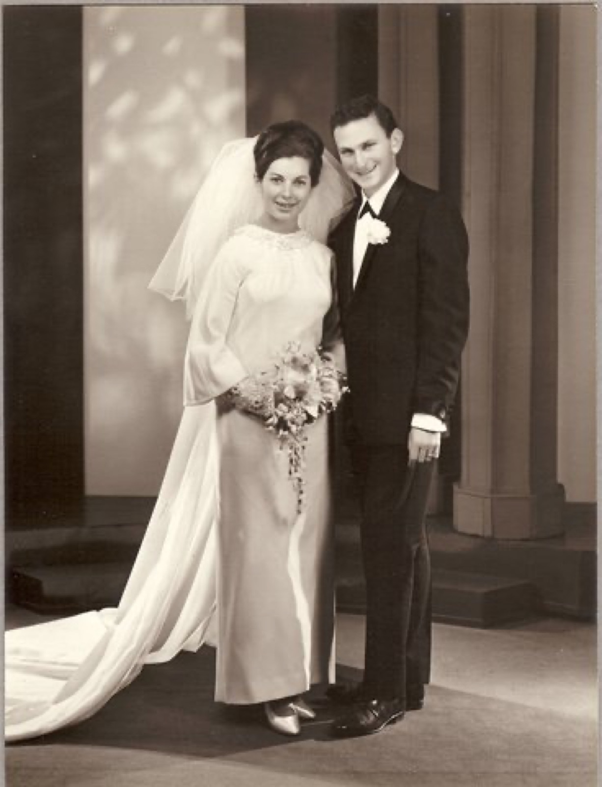

Cohen & Katz / London, Sydney & Johannesburg
Across oceans.
Through generations.
Lewis and Rebecca, their children Isaac, David and Dolly, and the family lives that followed in South Africa, Canada and Israel.


Lewis and Rebecca: the starting household
Mark’s paternal line runs from Lewis Cohen and Rebecca Katz, through their son David and grandson Leonard Lewis Cohen, to Mark. The family account names three children of Lewis and Rebecca: Isaac (Harry), David and Deby (Dolly).Mark Cohen: Cohen family recollections
The supplied tree gives Lewis’s birth around 1879, Rebecca’s around 1878 in Poland, their marriage in 1899, and Rebecca’s father as Yitzchak. It places the household in Mile End Old Town at the 1911 census. These details are retained as family-tree information; the 1911 census, marriage and birth originals have not yet been inspected.Mark Cohen: Cohen family recollections
Rebecca’s reported death is 4 July 1953, and Lewis’s 1 May 1963, both in Johannesburg. Their original death and estate records remain research targets.Mark Cohen: Cohen family recollections
The 1901 census: Lewis and Becky


Mark identifies this couple as Lewis and Rebecca. The page records Lewis aged 22, married, a machinist (tailor) and worker, with Becky aged 20, his wife. Both are recorded as born in Poland, with a Russian-subject annotation. It does not identify a town or Rebecca’s maiden name.Lewis and Becky Cohen: 1901 census
The address appears to carry down as 41 Artillery Lane; that reading remains provisional. No child is listed in this household. Isaac’s reported 1900 birth therefore remains unresolved, rather than disproved. Becky’s recorded age points to about 1880–1881, conflicting with the older tree’s 1878.Lewis and Becky Cohen: 1901 censusMark Cohen: Cohen family recollections
The family chart
Relationships below come from Mark’s family account. Follow each name to its evidence notes. The chart does not supply missing dates.
Mark Cohen: Cohen family recollectionsLondon to Sydney, 1913
The Rangatira outbound list is dated 6 February 1913, London. The ship was bound for New Zealand, but the Cohen family was booked to land at Sydney, with New South Wales as the intended future residence. Lewis is described as a farm hand; all five travelled third class under ticket H56.Rangatira outbound manifest, 1913


The NSW arrival transcription lists the same family at Sydney on 20 March 1913. Mark confirms the identification and remembers that they lived in Bondi for a time. Their Bondi address, length of stay and subsequent voyage to South Africa remain unknown.Rangatira arrival at Sydney, 20 March 1913Mark Cohen: Cohen family recollections
| Person | 1913 manifest | Supplied family tree |
|---|---|---|
| Lewis / Mrs Cohen | 33 / 33 | Born c.1879 / c.1878 |
| Isaac | 11 | Born 1900 |
| Davey / David | 8 | Born 8 January 1903; would be 10 |
| Debra / Dolly | 5 | Born c.1906 |
The discrepancies stay visible. They are not grounds to invent corrected birth dates or an explanation for the recorded ages.Mark Cohen: Cohen family recollections
Quarantine and the ship’s later fate
Mark remembers a quarantine episode on arrival, and accepts measles as the corrected illness. Harbour Trust notes describe a 21-month-old Rangatira passenger who died of measles at North Head Quarantine Station on 23 March 1913. This supports the ship’s quarantine connection; it does not establish that any Cohen was ill or admitted.Mark Cohen: Cohen family recollectionsNorth Head quarantine history
Sydney’s later 1913 smallpox epidemic is traced by the National Museum to Zealandia, arriving on 12 April. It should not be merged with the Rangatira episode.Sydney’s separate 1913 smallpox epidemic
Rangatira was subsequently wrecked near Robben Island in March 1916, three years after this journey. The official inquiry now confirms 31 March 1916, at 11:52 a.m., resolving the conflicting secondary dates. The family was not identified as aboard at the wreck.Rangatira wreck near Robben IslandRangatira: official inquiry No. 7715
Court of Inquiry No. 7715 sat at Cape Town on 26 April 1916; the finding was issued in London on 27 June. Rangatira was bound from London for Auckland with general cargo and 79 crew. Nobody was killed or injured. The court found Captain Robert Dixon Lowden negligent for inadequate speed reduction and soundings in fog, recommended a six-month certificate suspension, and exonerated the other officers. Refloating attempts were unsuccessful at the hearing.Rangatira: official inquiry No. 7715
Read the supplied official inquiry finding. The term in the report is stranding, rather than foundering.Rangatira: official inquiry No. 7715
David, Millie and Keens
Mark remembers David as a successful businessman, owner of Keens, an electrical wholesaler. A 1945 official notice provides a concrete business record: David Cohen and Alec Natas had operated Keens at 22 Montreal House, 118 President Street, Johannesburg. Following Natas’s retirement, David continued for his own account and benefit. The notice is dated 20 April 1945.Mark Cohen: Cohen family recollectionsKeens partnership notice, 1945
Mark recalls a later Keens office at 246 Main Street, and a corner involving Main and Marshall streets in Jeppe. The exact address and chronology have not been verified. He also recalls David selling Keens. Bidvest’s 2007 directory lists Keens Electrical within Voltex, but the intervening sale and ownership chain remain unproved.Mark Cohen: Cohen family recollectionsKeens Electrical in Bidvest’s 2007 directory
David and Millie Kavin were Leonard’s parents. No marriage certificate has yet been inspected.Mark Cohen: Cohen family recollections
40 Central Street, Houghton
Mark remembers David’s home as a two-acre property at 40 Central Street, alongside a substantial property and equities portfolio, including land on the Vaal River. The scale and portfolio are family recollection, awaiting estate and title records.Mark Cohen: Cohen family recollections
The property trail is unusually specific: in 1989, Millie Cohen applied concerning erven 1752 and 1753, Houghton Estate; a 1991 notice records approval under scheme 2539 and cites deed T7788/54. A 1997 notice explicitly places erf 1752 at 40 Central Street, Lower Houghton. This strongly connects the earlier Millie notice to the remembered family home, but does not establish acreage or ownership succession.Millie Cohen’s Houghton application, 1989Houghton property approval, 199140 Central Street identified as erf 1752
David’s gravestone confirms 16 July 1980. Mark supplies grave TT 1166. The Hebrew appears to name him as David son of Leib; that reading remains provisional. The English memorial remembers his wife, children, grandchildren and sister. Its plural wording is not an independent count of biological children.David Cohen gravestoneMark Cohen: Cohen family recollections


A collection remembered
Mark recalls David owning a large collection of Africana. While away and unsure he would return to South Africa, David reportedly instructed his mother Rebecca to donate it to Wits University. The date, contents and completion of the donation are unverified. Verification has been deferred at Mark’s request.Mark Cohen: Cohen family recollections
Isaac (Harry) and Dolly


Isaac’s later life remains largely undocumented here. Dolly appears as Deby in the supplied tree and probably Debra in the family’s 1913 entry. Her later surname, spouse and death date are not established. Mark identifies Lucille as her daughter; her earlier surname has not been established.Mark Cohen: Cohen family recollectionsRangatira outbound manifest, 1913
Leonard Lewis Cohen
Leonard, Mark’s father, was born on 2 June 1941. The supplied Capetown Castle arrival list records him at Southampton on 24 December 1959, a single South African student planning a ten-day visit. This is a later visit, separate from the 1913 household migration.Leonard’s Southampton arrival, 1959Mark Cohen: Cohen family recollections


His gravestone records death on 30 January 1995, and the Hebrew name Yehuda Leib son of David ha-Kohen. Plot U7422 is visible.Leonard Lewis Cohen gravestone

Leonard’s early years and marriage






The wedding portrait connects this branch with the Gilinsky family. Mark identifies his parents as Luba and Leonard.Luba and Leonard’s wedding portraitMark Cohen: Cohen family recollections
Lucille, Brian and the Freed connection
Mark identifies Lucille as Dolly’s daughter and Brian Freed as her husband. He remembers their move to Toronto and children Nadine, Darryl, Kim and an older sister whose name he could not recall.Mark Cohen: Cohen family recollections
Public comments dated 16 July 2017, attributed to Brian and Lucille Freed, name Lauren, Daryl, Nadine and Kim in descending age order. This is a strong match to the household Mark describes: Lauren is likely the unnamed older sister, and the source spells Daryl with one r. The comments do not themselves establish the Dolly relationship.Brian and Lucille Freed’s public family comments
The couple wrote that they had spent forty years in Canada and six in Israel. Approximate moves around 1971 and 2011 are inferences, not exact migration dates. Their present residence is not established. Brian also names Jonathan as his younger brother and Justin as Jonathan’s son; those collateral links remain attributed to the comment rather than independently documented.Brian and Lucille Freed’s public family comments
Living descendants are represented with names and essential family links only; contact details and detailed personal profiles are not reproduced.
What remains to be found
- Lewis and Rebecca’s marriage, exact birthplaces and parents.
- The original 1911 census household, to resolve the children’s ages.
- The Bondi address and Australia–South Africa passage.
- David’s estate file, using death 16 July 1980, wife Millie, Keens and 40 Central Street as identifiers.
- Keens’ sale date and buyer; the Vaal property titles and estate inventory.
- Harry’s later life and Dolly’s married surname and dates.
No estate file or portfolio valuation has yet been obtained. A name-only match is not treated as a completed family identification.